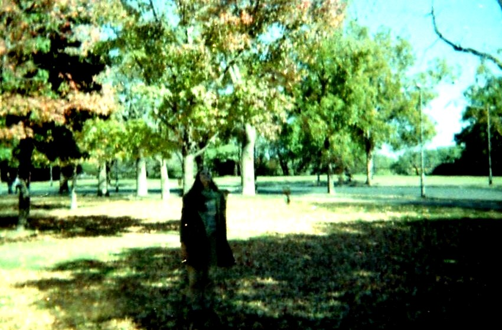
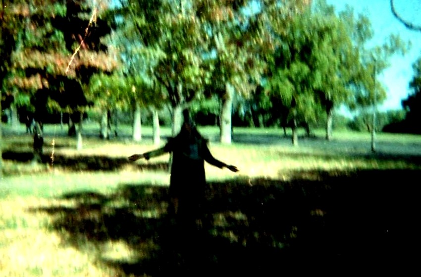
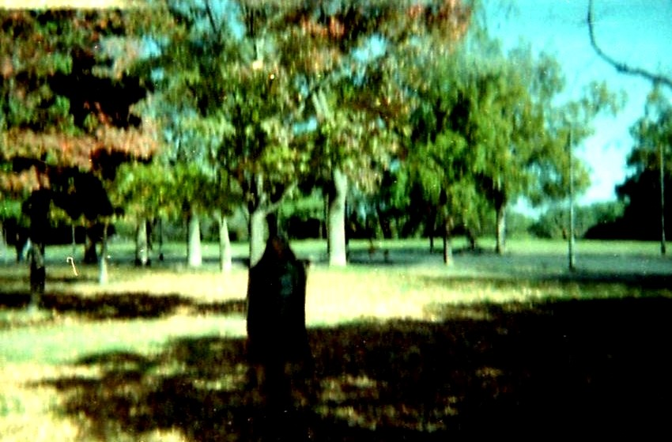
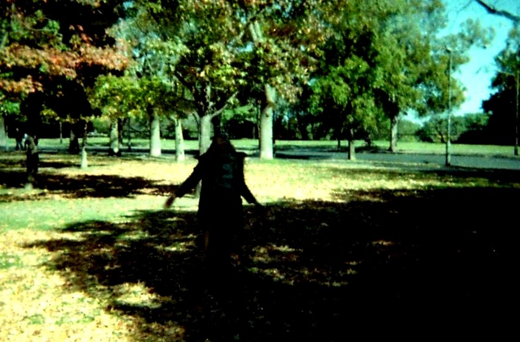

Galeria


Me gradué de Licenciada en Bellas Artes con Mención en Pintura en 2014 (U.N.R)
También me formé en oficios y he participado en exposiciones colectivas desde 2007.
Mi búsqueda siempre está en construir desde el arte y la naturaleza que es lo que me inspira. Todo mi trabajo (y mi vida) está atravesado por los materiales y los tiempos de la naturaleza, y pensado también para generar el menor impacto negativo posible en el ambiente. Me interesa el cuidado del ambiente y esto es algo que intento reflejar/incorporar en mi obra.
Crecí en Entre Ríos con fines de semana en el campo, siempre muy cercana a la naturaleza y sintiendo un inmenso amor hacia los animales. Realmente amo el invierno, el mar y los animales. Comparto mi hogar con un perro y dos gatos que siempre están cerca acompañando mi proceso creativo.
Soy una persona curiosa por lo que disfruto conociendo procesos y materiales para hacer todo lo que necesito para crear y para mi vida cotidiana.
Pinto, dibujo, bordo, hago cerámica, coso, tiño con tintes naturales, hago fieltro y papel (reciclado y de plantas), encuaderno, saco fotos (estenopeicas, instantáneas y analógicas) las cuales revelo yo misma, restauro, preparo acuarelas y tintas con pigmentos naturales, hago mis propios cosméticos y en el último tiempo he estado experimentando con biomateriales y revelados ecológicos para fotografía.
Me atraen los procesos largos, antiguos en desuso, de otra época.
Todas mis obras se relacionan entre si y tiene que ver por lo general con lugares y objetos que he habitado (o me han habitado) en esta u otra vida y con los que tengo cierta fascinación.
Soy artista de la galería Almacén de Arte (San Nicolás de los Arroyos, Pcia. De Buenos Aires) con la que he participado en ferias de arte durante los últimos años y junto con los cuales formo parte de Mercado de Arte Bonaerense.
Actualmente doy clases de cerámica en mi taller en Rosario, Argentina que es donde vivo.

"Trabajo con elementos orgánicos y soy de invierno"

"En lo pequeño invito a recorrer el detalle, lo íntimo"

"En mis obras los materiales que dan la forma son también la nieve, la montaña rocosa, el bosque y la cascada, es eso lo que busco atrapar"

"En estos lugares tan poco habitados, como en mí, prevalece la naturaleza. Hay un arco iris como un puente entre ellos y mi taller. Quizás los he habitado en esta vida o en otras y vuelven desde la nostalgia y la admiración"
 Instagram
Instagram
 WhatsApp
WhatsApp
 Mail
Mail